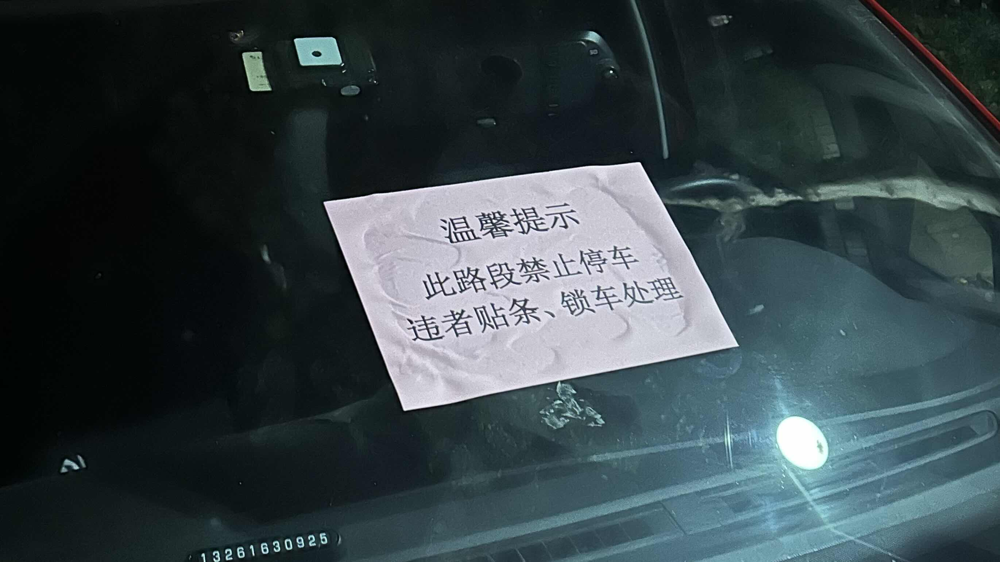

कार पार्किंग की दुविधा | मूल, AI द्वारा अनुवादित
मेरे माता-पिता के अपार्टमेंट कॉम्प्लेक्स में मेरी दो कारें हैं, लेकिन हमारे पास इमारत के अंदर केवल एक पार्किंग स्लॉट है। हम एक और पार्किंग स्लॉट किराए पर नहीं लेना चाहते, इसलिए मुझे अपनी दूसरी कार को सार्वजनिक क्षेत्र में पार्क करना पड़ता है। सार्वजनिक क्षेत्र में कानूनी पार्किंग स्लॉट हैं, लेकिन वे पर्याप्त नहीं हैं। अक्सर, सड़क पर बीस या तीस कारें पार्क की जाती हैं। गार्ड कारों के सामने वाली खिड़कियों पर एक लाल कागज चिपका देगा ताकि उन्हें चेतावनी दी जा सके।
पार्किंग शुल्क लगभग 12 CNY प्रति दिन, या 0.5 CNY प्रति घंटा है। मेरी पहली कार मुफ्त है क्योंकि यह हमारे अपने पार्किंग स्लॉट के लिए निर्धारित है।
मैंने अपनी दूसरी कार को एक कानूनी पार्किंग स्लॉट में पार्क किया। हालांकि, कार का उपयोग करना सुविधाजनक नहीं है, यहां तक कि देर रात को भी। अक्सर कोई व्यक्ति देर रात को स्पॉट ले लेता है, जिससे यह बहुत परेशानी भरा हो जाता है।
यह हाल ही में हुआ: मैंने सुबह 4 बजे कार का उपयोग किया और दो लैंब शशलिक स्केवर्स का आनंद लेने के लिए बाहर गया। मैं एक घंटे बाद, लगभग 5 बजे वापस आया, और स्पॉट किसी और ने ले लिया था। एक समाधान यह था कि कार को इमारत के अंदर ले जाकर अपनी पहली कार के सामने पार्क कर दिया जाए। चूंकि शनिवार था, मेरी पत्नी को पहली कार को अपनी कंपनी तक ले जाने की आवश्यकता नहीं होगी।
हालांकि, दोपहर में, जब मैं सो रहा था, मुझे एक कॉल से जगा दिया गया। किसी ने मुझे कार हटाने के लिए कहा। हालांकि मैंने सावधानी से पार्क किया था और आस-पास की कारें निकल सकती थीं, लेकिन मालिक इस स्थिति से नाराज थे।
आज रात, मैंने सोचा कि ऐसी गलतियों से कैसे बचा जाए और इसे सही तरीके से कैसे संभाला जाए। मुझे फिर से कोशिश करनी चाहिए कि क्या कोई मेरा स्पॉट ले लेगा, यहां तक कि देर रात को भी। मुझे यह पता लगाने की आवश्यकता है कि ऐसा होने की संभावना क्या है ताकि मैं जान सकूं कि क्या मैं इस गलती को कर सकता हूं। फिर मैंने सोचा, क्यों न अवैध सार्वजनिक क्षेत्र में पार्क किया जाए? हालांकि मुझे कार की सामने वाली खिड़की से लाल कागज साफ करने से नफरत है, लेकिन यह इसके लायक हो सकता है। खिड़की पर चिपका हुआ कटा हुआ कागज हटाने में ठीक है, लेकिन यह परेशानी भरा है।
 स्रोत: स्वयं लिया गया
इस तरह, मैं कभी भी अपनी कार का उपयोग कर सकता हूं। इसलिए, मेरा वर्तमान ध्यान इस बात पर है कि कागज को प्रभावी ढंग से कैसे साफ किया जाए। ऐसा लगता है कि मुझे इसे घोलने के लिए अल्कोहल का उपयोग करने की आवश्यकता है। मैं इस तरह के समाधान के बारे में सोचकर खुश हूं।
पहले, हमारे पार्किंग स्पॉट के लिए होने वाली परेशानी से बचने के लिए, हमने लगभग दो महीने तक अपनी दूसरी कार का उपयोग नहीं किया।
इसलिए, यह दृष्टिकोण ठीक लगता है, और हम सामने वाली खिड़की से लाल कागज को प्रभावी ढंग से साफ करने का तरीका ढूंढ रहे हैं।
यहां कई सबक हैं: गलतियों से डरने की जरूरत नहीं है जब तक कि वे सहनीय हों। बिना किसी सीमा के सबसे अच्छे तरीकों के बारे में सोचने की कोशिश करें।
नियम कभी-कभी भयानक होते हैं, और हमें उनके खिलाफ लड़ना पड़ता है। मुझे लगता है कि हमारा अपार्टमेंट कॉम्प्लेक्स सार्वजनिक क्षेत्र में 50 और कारों को पार्क करने की अनुमति दे सकता है। अपार्टमेंट कॉम्प्लेक्स के अंदर की हर कार ने पहले ही पार्किंग के लिए शुल्क का भुगतान कर दिया है। गार्ड लोगों को धमकाने के लिए लाल कागज का उपयोग करता है, इसलिए केवल लगभग बीस कारें नियम को चुनौती देने और सार्वजनिक क्षेत्र में पार्क करने की हिम्मत करती हैं। मैंने उनके साथ शामिल होने का फैसला किया।
अद्यतन:
बहुत दिलचस्प। मुझे अपनी कार की सामने वाली खिड़की पर एक लाल कागज मिला। मैंने नीचे दिए गए मल्टीफंक्शनल एडहेसिव रिमूवर को खरीदा, लेकिन यह इस मामले में अच्छी तरह से काम नहीं करता है। तरल जल्दी से झुकी हुई सामने वाली खिड़की से नीचे बह जाता है।
अगली बार, मैंने इसे हटाने के लिए घर पर गर्म पानी का उपयोग किया, जो अच्छी तरह से काम कर गया। हालांकि, गार्ड उस पर एक और लाल कागज चिपका देगा। मुझे शायद अपनी सामने वाली खिड़की के ऊपरी बाएं कोने पर चिपकाने के लिए एक लाल कागज बनाना चाहिए ताकि गार्ड को यह सोचने में धोखा दिया जा सके कि उसने पहले ही ऐसा कर दिया है और उसकी दया की उम्मीद की जा सके।
 स्रोत: JD.com
स्रोत: JD.com